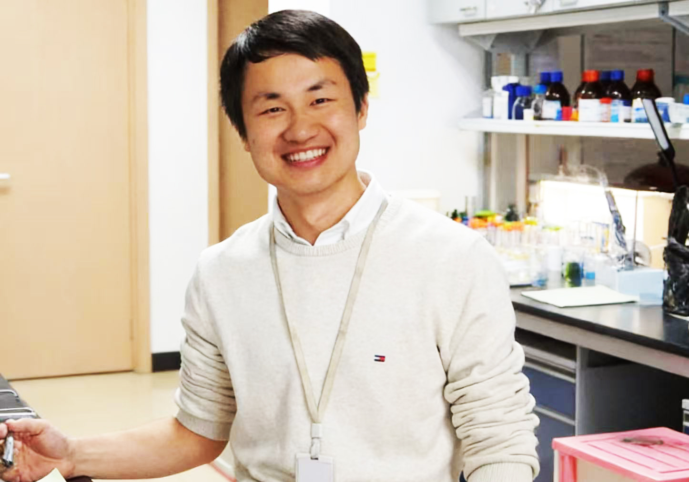

Dr. Xiangang Huang, Principal Investigator

pi.jpgDr. Xiangang Huang is an Associate Professor at Shanghai Jiao Tong University, School of Chemistry and Chemical Engineering. His research focuses on developing oral devices and platforms to deliver nucleic acids, such as mRNA and siRNA.
E-mail: xghuang@sjtu.edu.cn
Work Experience
2026 – Present
Associate Professor, Shanghai Jiao Tong University, School of Chemistry and
Chemical Engineering
2020 – 2026
Postdoctoral Fellow, Harvard Medical School (Advisors: Prof. Wei Tao, Prof. Daniel
S. Kohane and Prof. Seok-Hyun Yun)
2017 – 2019
Postdoctoral Fellow, Shanghai Jiao Tong University (Advisors: Prof. Xinyuan Zhu
and Prof. Chuan Zhang)
Education
2012 – 2017
Ph.D. Pharmaceutical Science, ETH Zurich, (Advisors: Prof. Jean-Christophe Leroux
and Prof. Bastien Castagner)
2010 – 2012
M.S. Polymer Chemistry, Wuhan University (Advisor: Prof. Xulin Jiang)
2005 – 2010
B.S. Applied Chemistry, Wuhan University
Awards and Fellowships
Harvard Medical School Ignition Award (2024)